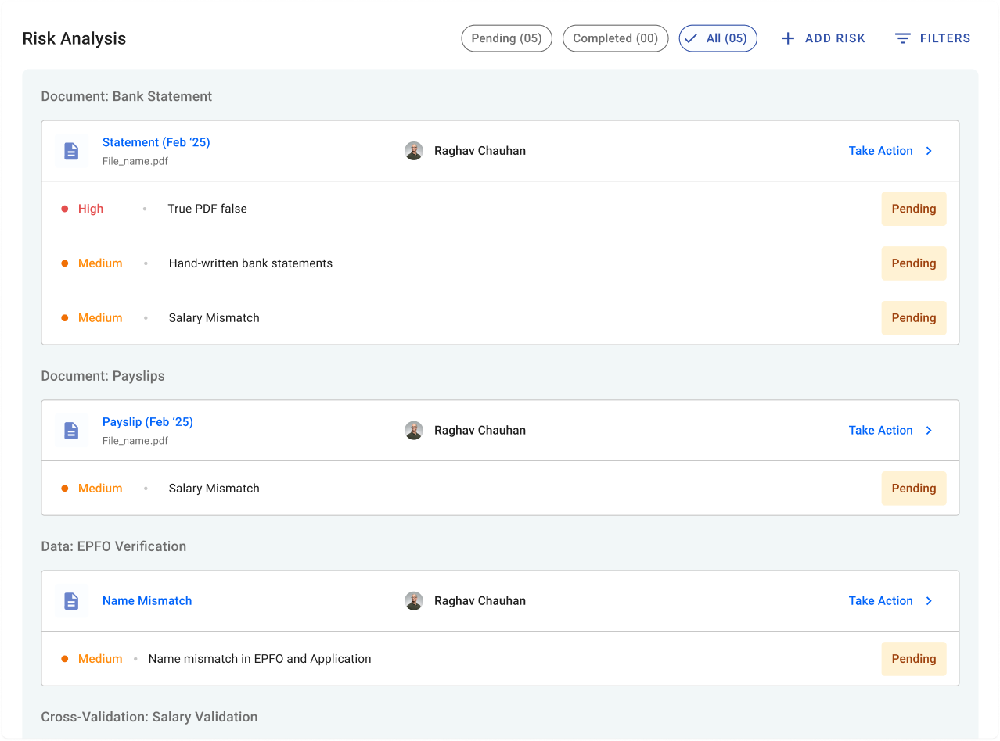
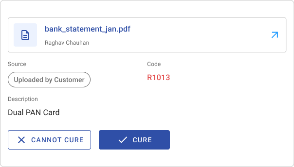
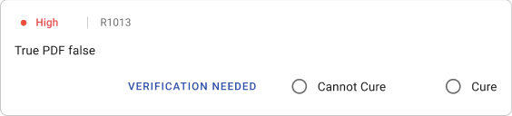
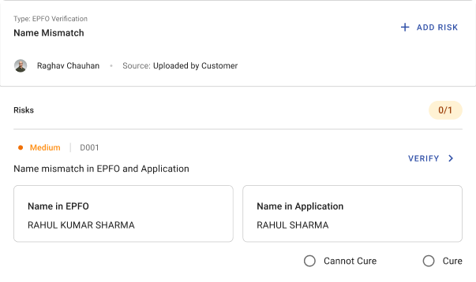
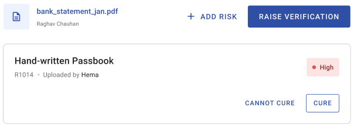
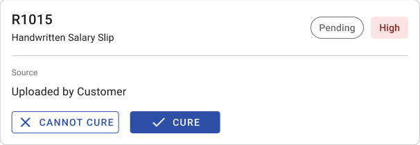
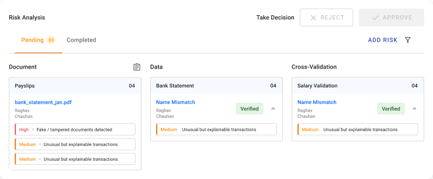
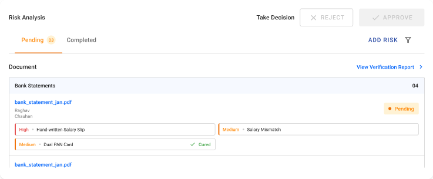
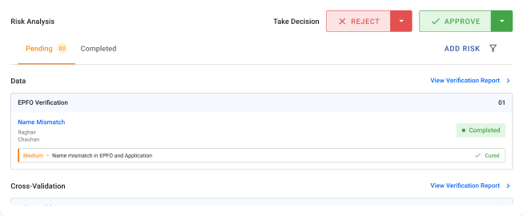
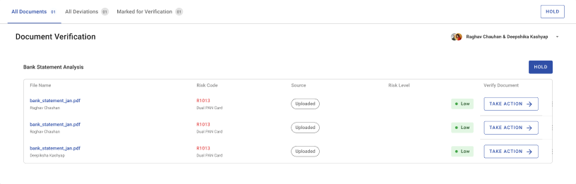

Half the steps, and fewer missed risks.

Before a bank lends you money, someone reads your paperwork.
That someone usually works for a Credit Information Company (CIC): a third party the bank pays to judge how risky your documents are. FYNDNA builds the tool they do it in.
You
apply for a loan and upload payslips, statements, ID.
The bank
sends the application out for a credit check.
A reviewer
goes through it document by document, risk by risk.
A decision
moves the application forward, or stops it.
A risk is anything that doesn’t add up.
Sometimes it’s obvious. Often it’s two words.
Payslip · Feb
Bank statement · Feb
Every risk ends in a call.
A reviewer rules on each document, and those rulings add up to a verdict on the whole application. Get one wrong and it carries into every step after.
On each documentrepeated for every risk
On the applicationonce, at the end
Four kinds of reviewers make that call.
Different jobs, same screen. Each team I worked with spoke for one of them.
Agency verifiers
External agencies who check a customer’s CIC/CIBIL records on the bank’s behalf.
Underwriters & credit officers
Match CIC/CIBIL data against the bank’s risk policy to set eligibility and interest rates.
Fraud risk analysts
Watch credit reports for application fraud, identity theft and compromised profiles.
Relationship managers
Pull a preliminary report, with consent, to surface pre-approved offers in branch.
There’s an existing flow similar to this. Just finish it off.
The old flow was too flexible for a job that never changes.
What the old flow was for
Comparing anything with anything: a document against a dashboard, another module, any section.
What reviewers actually do
The same call, risk after risk, hundreds of times a day.
Flexibility helps when you’re exploring. Here, every extra option was just another click.
So I walked it, click by click.
Closing a single risk took eight steps. The redesign does it in four.
Multiply it out and the problem is obvious.
10documents× 4risks each× 8steps each =320steps a day
One dot per step. At the top of the daily range.
Before drawing anything, I asked a lot of questions.
Q1Is cure / cannot cure the main thing they do?
Q2If the learning curve is steep, how do we catch mistakes?
Q3Are they the final decision makers, or does it go further?
Q4Do they get any training before using the flow?
Q5Does the backend know which type each document is?
Q6How are risk types added, and do users know what each means?
Q7What are the first five things they look for?
+439,847more, over some very long meetings
…and drew my own version alongside the answers.
Where does the work happen?
An overlay, or a page of its own?
I was asked to reuse the slide-out overlay from another module, for consistency. But reviewers make a call that every later decision depends on. They need the document and its risks in front of them, not a panel over a dashboard.
Overlay
Dropped
- Made for open-ended comparison, not one repeated decision.
- Kept the eight-step path to close each risk.
Its own page
Chosen
- Document on the left, its risks on the right. Decide at a glance, in four steps.
- Jump to the next document without leaving.
Consistency matters, until it costs the person using the screen.
What does one risk look like?
How much should a risk card say?
A risk is either untouched or resolved, and the card has to make that obvious. I tried hierarchy after hierarchy with the other teams, to learn which details actually mattered.





Some of the explorations: full cards, compact rows, radio buttons, always-on buttons.
The one that worked
The one that worked
Key facts first, actions on hover. No wall of identical buttons, and the reviewer reads the risk before acting on it.
- 1Cure
- 2Cannot cure
- 3Verify
Every team agreed all three carry equal weight, so none is styled as primary.
Iteration only pays off with steady feedback. It’s what told me which changes mattered.
How do you see the whole application?
Sort the dashboard by document, or by risk?
Teams wanted different groupings. I built the options as dashboard widgets and took them back to each team to rank.




Widget options: by document, by data source, by cross-validation, and as a table.
By document, with the risks inside
By document, with the risks inside
The dashboard tells reviewers what they’re walking into before they open a single risk.
- 1Filters on top
- 2Risks grouped under each document
- 3A status: cured or pending
Reviewers find and narrow what they need without holding the whole application in their head.
What I’d tell the next designer.
Build the wrong version first. Once the flawed flow is on screen, it argues against itself.
Eight steps didn’t become four because the screens got cleaner. They did because the problem got reframed.
Getting three teams with conflicting asks behind one direction was the real work. It just doesn’t screenshot well.